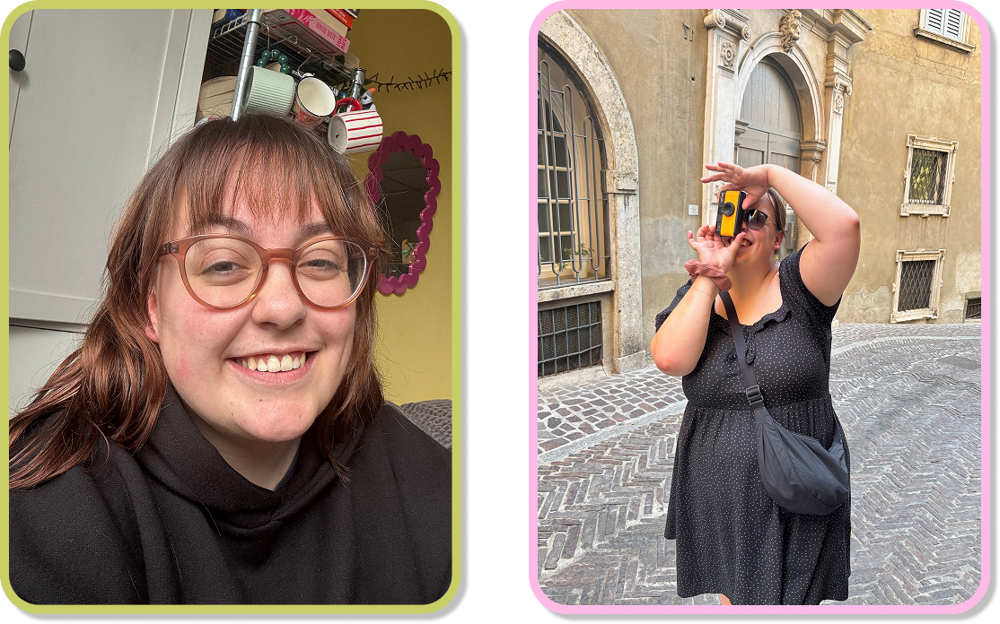

2020 - now
Communication & Multimedia Design
Avans University of Applied Sciences

Hi! My name is Jamie, and I study Communication & Multimedia Design at Avans
University of Applied
Sciences in ’s-Hertogenbosch. Or, in short, I’m a CMD student!
I’m a curious and enthusiastic person who loves exploring new ideas. Whenever a subject interests me, I
can completely immerse myself in it and I’ll be unstoppable. CMD is a broad field, but I’m particularly
drawn to social design, graphic design, gamification and UX/UI design.
My interests and hobbies are just as varied, and I enjoy discovering new things to learn or
create.However, my greatest passion remains reading, or perhaps devouring, books. Curling up on the sofa
with a book and a cup of one of my favourite teas is my idea of a perfect evening.
If you have any questions or would like to get in touch, feel free to email me at
jamiekramer2000@gmail.com.
2020 - now
Avans University of Applied Sciences
2024 - 2025
Utrecht University of Applied Sciences
2019
Utrecht University
2012 - 2019
Montessori College Nijmegen
Sept 2023 - Feb 2024
Internship where I helped realise ‘De Zwerver’, an escape room experience at home. My other responsibilities included DTP work, social media and video editing.
Feb 2020 - Oct 2022
English and maths tutor for high school students.
Jan 2020 - May 2020
Pizza baker.
June 2017 - May 2018
Cashier.
Aug 2016 - Dec 2016
Cashier & customer service.